Ocean Acoustics · Coastal Engineering · EIT
I love sound, art, physics, and all of the beautiful things we can glean at their intersection. I use my quantitative skills in signal processing, machine learning, and logical problem solving to understand and protect underwater environments.
Explore my work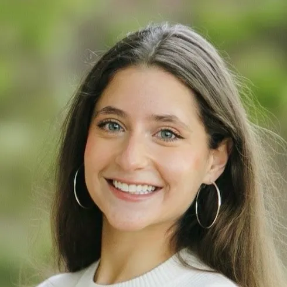
// 01 — About
I'm a scientist and engineer at Integral Consulting, Inc., working at the intersection of ocean acoustics, coastal sciences, and machine learning. My work spans underwater soundscape monitoring, acoustic vector sensor analysis, and finding solutions to coastal challenges.
I hold a B.A. and B.E. from Dartmouth College, where my honors thesis developed a structural health monitoring system for underwater turbines using passive acoustic monitoring. I'm also an Engineer-in-Training (EIT).
Outside the lab, I've captained Dartmouth's cheer team after competing in the sport for 17 years, co-led a Dartmouth Humanitarian Engineering project, and pursued a range of creative side projects.
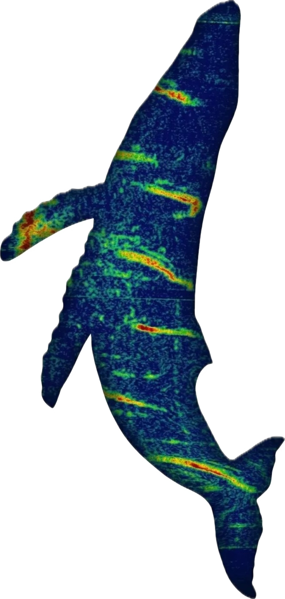
// 02 — Research
01 —
Developing novel visualization and data processing methods for single-hydrophone localization and soundscape monitoring, with applications in offshore energy permitting and sound field verification.
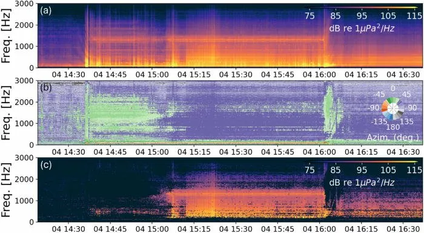
02 —
Developing a computer vision machine learning system integrated with an unmanned underwater vehicle (UUV) to detect lost fishing gear in the water column — gear that poses a secondary entanglement risk to marine mammals and other protected species.
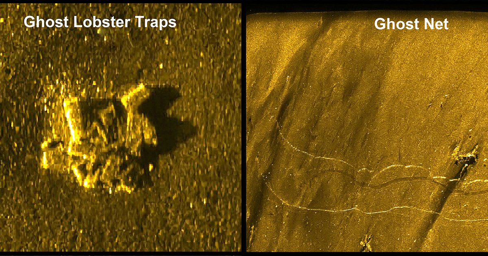
03 —
Advancing machine learning post-processing of hydrostatic wave models (XBeach) to produce more accurate surf quality analysis.
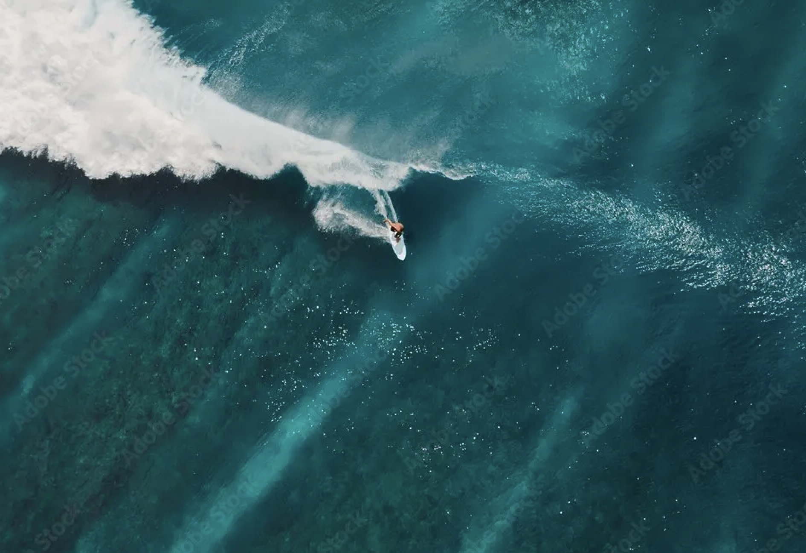
04 —
Field experiment at Stony Brook investigating diurnal effects of photosynthetic activity on sound propagation through shallow eelgrass meadows.
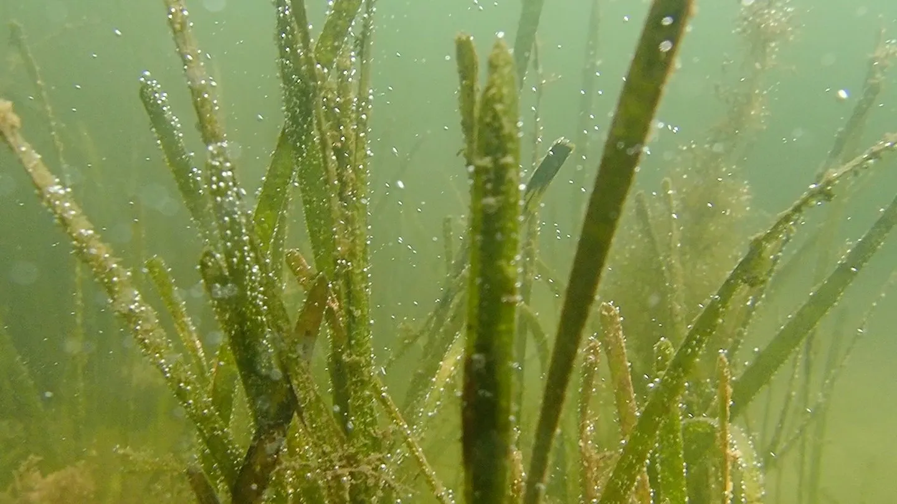
05 —
Invented and fabricated a power-productive VATT for low-flow environments as part of the Marine Energy Collegiate Competition (MECC). Led Phase I testing at UNH Chase Ocean Engineering Lab. Awarded $20k DOE grant.
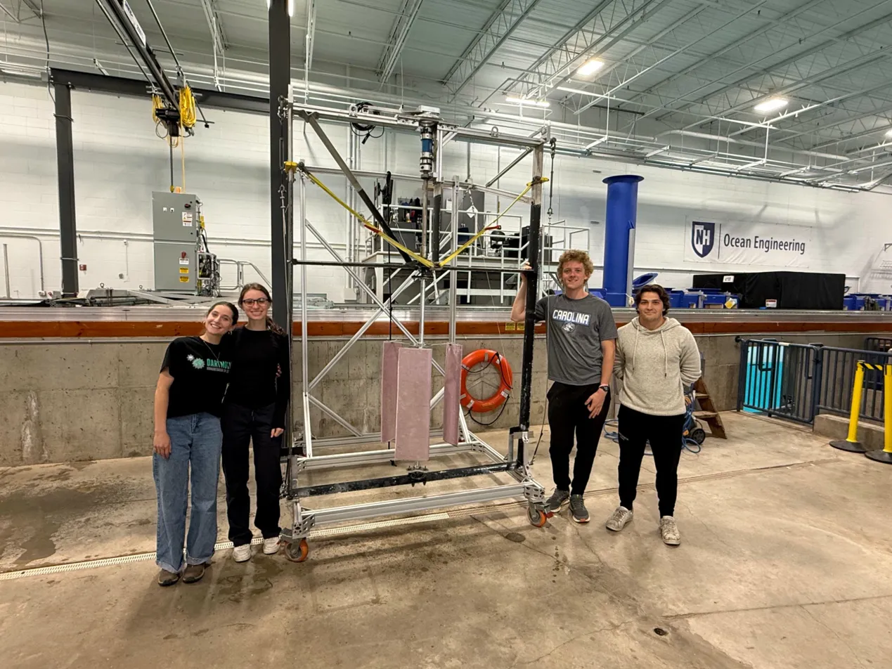
06 —
Honors thesis work: designed a tank experiment using passive acoustic monitoring to detect structural damage in underwater turbine blades. Built a custom small-scale turbine with prefabricated faults for acoustic data collection.
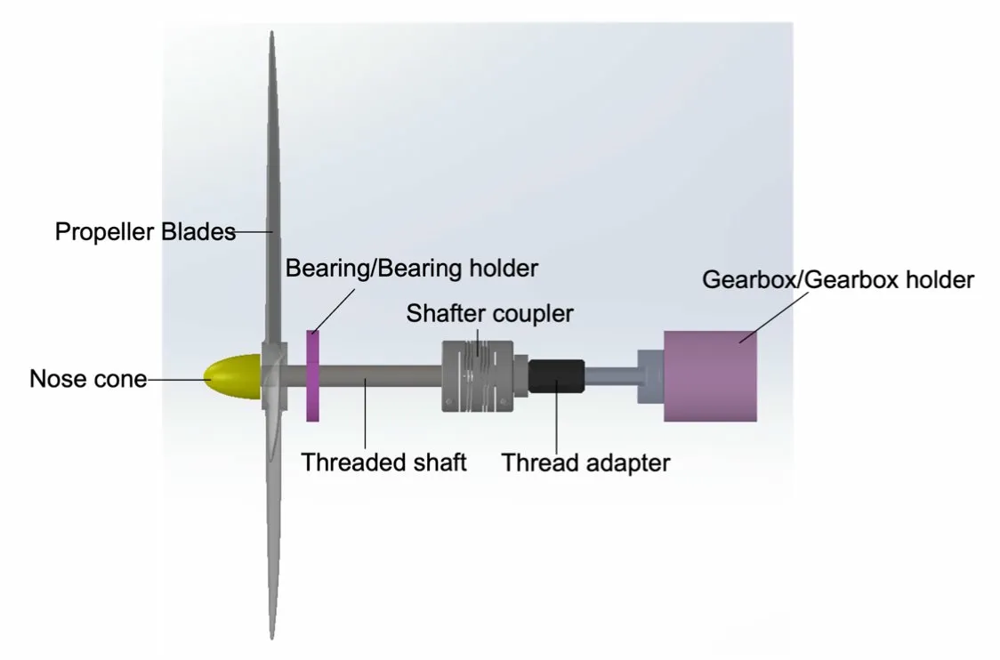
// 03 — Other Projects
Generalist work — engineering, code, and whatever else looked interesting.
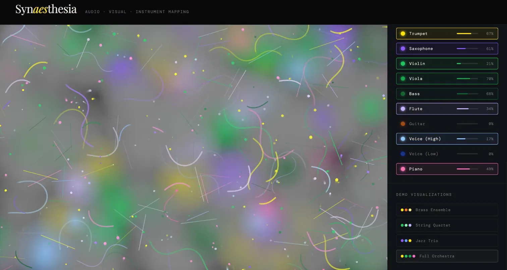
Art + CodeI have audio-visual synesthesia — it has made me fascinated with the way the brain finds patterns. I associate different timbres (instruments) with different colors. This tool mimics the way songs appear to me.
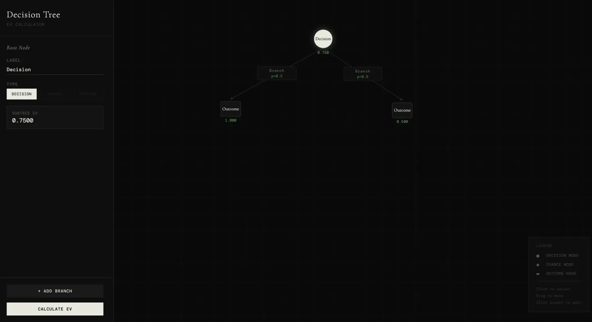
ToolAn interactive GUI for building decision trees and computing expected values across branching outcomes. Useful for thinking rigorously about uncertainty.
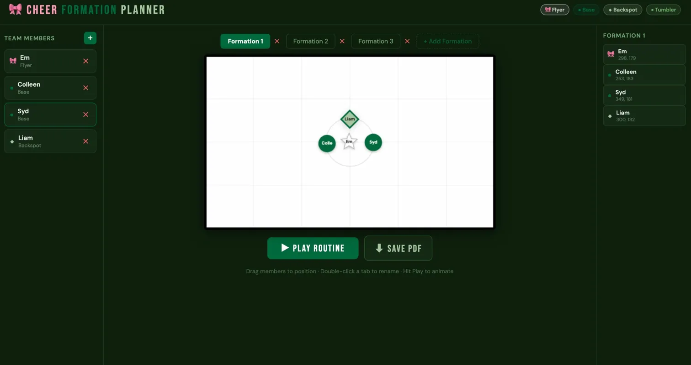
Tool// 04 — Publications & Presentations
Peer-reviewed publications and international conference presentations.
On Directional Filtering for Sound Source Verification and Source Level Estimation
In: Effects of Noise on Aquatic Life IV, Springer, Cham — Barosin & Raghukumar
Towards more accurate sound field verification using directional acoustic filtering
JASA Express Letters, 5(4) — Barosin & Raghukumar
→ doi: 10.1121/10.0036394Directional acoustic filtering for sound field estimation and verification
State of the Science on Offshore Energy, Wildlife, and Fisheries — Long Island, NY (accepted)
Demonstration of a directional acoustic profiling float powered by ocean thermal energy conversion
Acoustical Society of America — Philadelphia, PA (invited)
Towards more accurate sound field verification using directional acoustic filtering
Acoustical Society of America — New Orleans, LA & Effects of Noise on Aquatic Life, Prague
Diurnal measurements of sound attenuation (100 Hz–10 kHz) in a shallow seagrass meadow
Acoustical Society of America — Sydney, Australia
// 05 — Contact
Open to research collaborations, speaking invitations, and interesting problems.